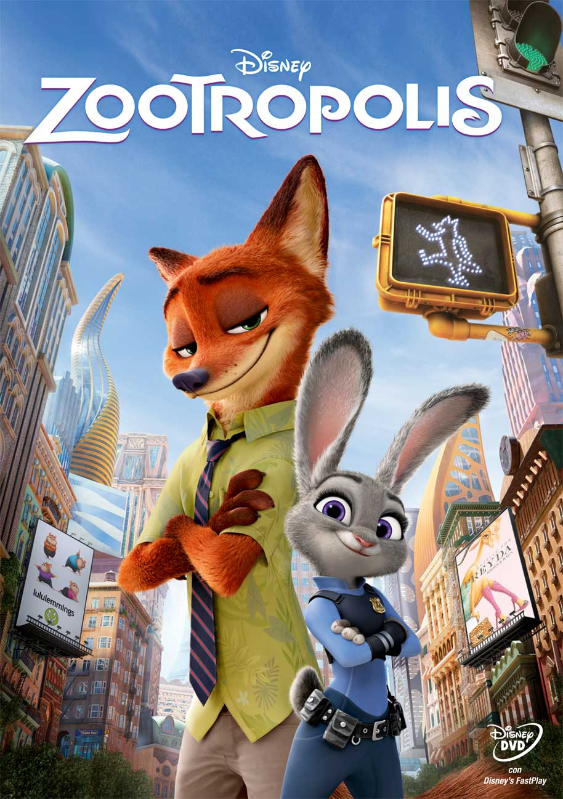

|  |
Zootropolis, è un film d'animazione diretto da Byron Howard e Rich Moore. Ambientato nella modernissima cittadina di Zootropolis, caratterizzata da molteplici quartieri in cui convivono pacificamente animali di ogni razza e dimensione, il film racconta la storia della piccola ma audace coniglietta Judy Hopps, poliziotta di campagna, che sogna di lavorare in qualità di Ufficiale di Polizia a Zootropolis. Ma al suo arrivo nella grande metropoli, la gentile Judy si scontra subito con le prime difficoltà: seppur accolta calorosamente dall’allegro ghepardo Benjamin Clawhauser, Judy è vittima dei pregiudizi del suo Superiore, il bufalo Bogo, capitano del dipartimento di Polizia, che a causa delle piccole dimensioni della coniglietta dubita delle sue capacità e potenzialità relegandola pertanto al ruolo di ausiliario del traffico.
Ma Judy non si abbatte, decide anzi di svolgere al meglio il suo lavoro per dimostrare a tutti coloro che la sottovalutano il suo valore. L’occasione non tarderà a presentarsi. Due giorni dopo aver preso servizio, mentre è nell’ufficio del Capitano Bogo che la sta rimproverando per aver abbandonato il suo posto di lavoro anche se per una giusta causa, entra d’improvviso una lontra, Virna Otterton, disperata per la scomparsa di suo marito Emmitt, quattordicesimo caso di predatore scomparso in città. L’intraprendente Judy non perde tempo e si offre per ritrovare il Sig. Emmitt. Il Capitan Bogo, dopo un momento di esitazione, concede alla coraggiosa agente 48 ore per ritrovare la lontra scomparsa, a condizione che dia spontaneamente le dimissioni in caso di fallimento.
Judy si lancerà con tenacia nella risoluzione di questo misterioso caso ritrovandosi a lavorare insieme ad una volpe loquace e truffaldina di nome Nick Wilde, con la quale instaurerà una profonda amicizia.
|